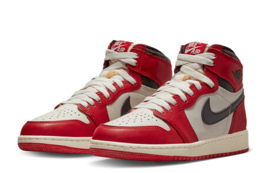
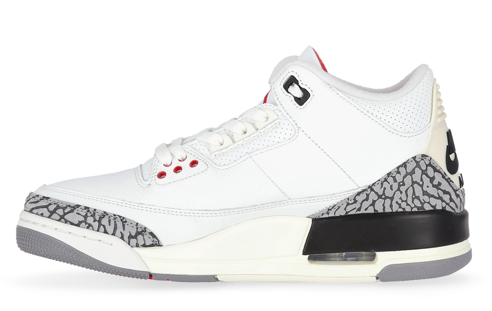
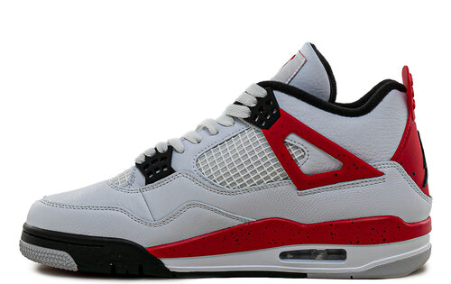

A medida que transcurrieron los años , Nike y Jordan siguieron sacando zapatillas, la primera de estas fue la Jordan 1,
la cual le trajo problemas a Michael al usarlas en un juego, porque en la NBA tenías prohibido usar calzado de color rojo,
así que decidió jugar igual y pagar las multas de 5.000 USD. Esto impulsó las ventas de Nike haciendo que saquen un diferente
modelo todos los años.
LOS DIFERENTES MODELOS DE JORDAN'S
A TRAVÉS DE LOS AÑOS
- 

- 
- 